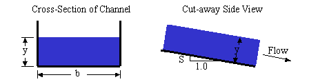

Abhishek Amalaraj
Mannings Calculator

The Manning formula is also known as the Gauckler–Manning formula, or Gauckler–Manning–Strickler formula
in Europe. In the United States, in practice, it is very frequently called simply Manning's equation.
The Gauckler–Manning formula states:
V = k/n *(R^(2/3))*(S^(1/2))
where:
V is the cross-sectional average velocity (L/T; ft/s, m/s);
n is the Gauckler–Manning coefficient. Units of n are often omitted, however n is not dimensionless,
having
units of: (T/[L1/3]; s/[ft1/3]; s/[m1/3]).
Rh is the hydraulic radius (L; ft, m);
S is the slope of the hydraulic grade line or the linear hydraulic head loss (L/L), which is the
same as the
channel bed slope when the water depth is constant. (S = hf/L).
k is a conversion factor between SI and English units. It can be left off, as long as you make sure
to note
and correct the units in your "n" term. If you leave "n" in the traditional SI units, k is just the
dimensional analysis to convert to English. k=1 for SI units, and k=1.49 for English units. (Note:
(1
m)1/3/s = (3.2808399 ft) 1/3/s = 1.4859 ft1/3/s)